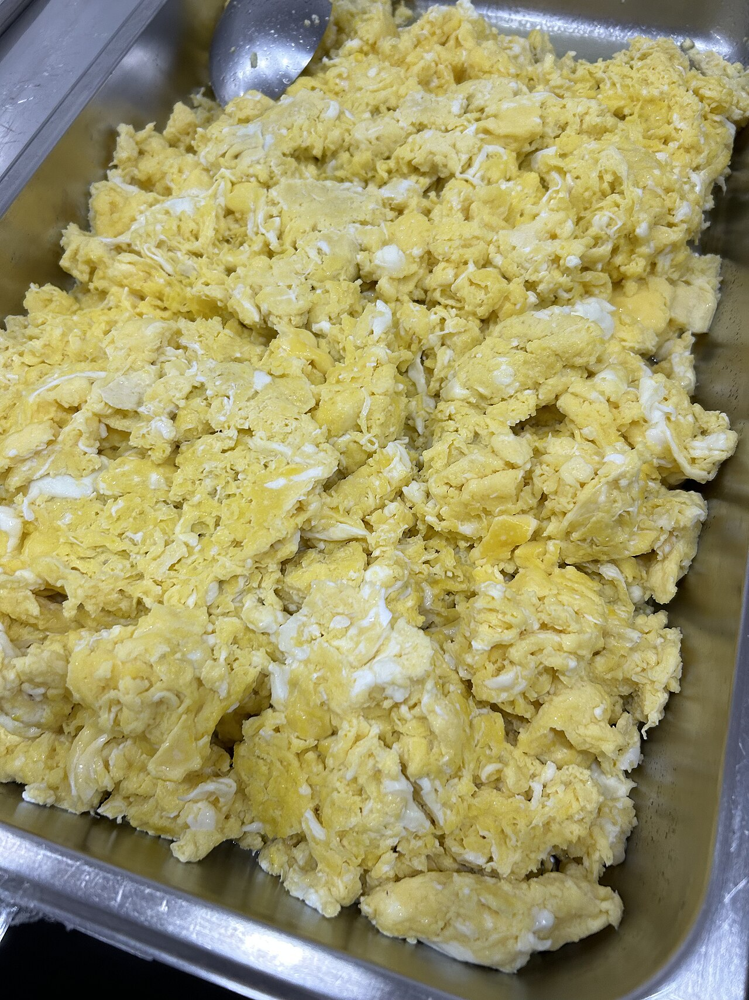

디퓨전 모델의 아이디어는 황당할 만큼 단순합니다 —
① 이미지에 노이즈(먼지)를 아주 조금씩 넣어 완전히 흐릿한 안개로 만듭니다.
② 그 과정을 하나하나 기억한 다음, 반대 방향으로 되돌리는 법을 배웁니다.
달걀을 풀어 스크램블 에그를 만들면 — 엔트로피가 올라갑니다. 자연에선 이걸 되돌릴 수 없습니다. 그런데 AI는 "어떻게 섞였는지"를 통째로 배워서 — 거꾸로 되감는 법을 알아냈습니다. 엔트로피를 역산하는 기계입니다.

자연에선 불가능 · AI는 가능합니다